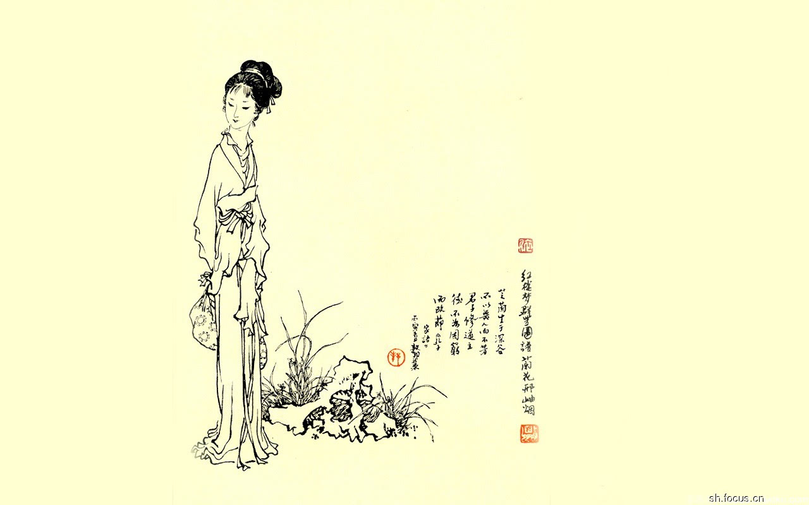

《红楼梦》

红楼梦是我国古代四大名之一，属章回体长篇小说，成书于1784年（清乾隆帝四十九年）。梦觉主人序本正式题为红楼梦，它的原名《石头记》、《情僧录》、《风月宝鉴》、《金陵十二钗》等。是我国古代最伟大的长篇小说，也是世界文学经典巨著之一。作者曹雪芹。现通行的续作是由高鹗续全的一百二十回《红楼梦》。书中以贾、史、王、薛四大家族为背景，以贾宝玉、林黛玉爱情悲剧为主线，着重描写荣、宁两府由盛到衰的过程。全面地描写封建社会末世的人性世态及种种无法调和的矛盾。